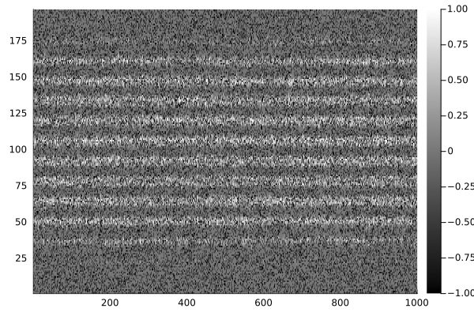
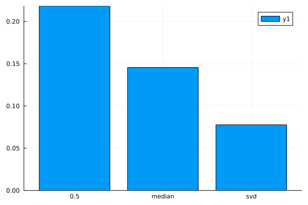

SVD Imputation
Often matrices and n-dimensional arrays with missing values can be imputed via a low rank approximation. Impute.jl provides one such method using a single value decomposition. The general idea is to:
- Fill the missing values with some rough approximates (e.g.,
mean,median,rand) - Reconstruct this "completed" matrix with a low rank SVD approximation (i.e.,
klargest singular values) - Replace our initial estimates with the reconstructed values
- Repeat steps 1-3 until convergence (update difference is below a tolerance)
To demonstrate how this is useful lets load a reduced MNIST dataset. We'll want both the completed dataset and another dataset with 35% of the values set to -1.0 (indicating missingness).
TODO: Update example with more a realistic dataset like some microarray data
julia> using Distances, Impute, Plots, Statistics
julia> mnist = Impute.dataset("test/matrix/mnist");
julia> completed, incomplete = mnist[0.0], mnist[0.25];Alright, before we get started lets have a look at what our incomplete data looks like:
julia> heatmap(incomplete; color=:greys);
/home/travis/.julia/packages/GR/oiZD3/src/../deps/gr/bin/gksqt: error while loading shared libraries: libQt5Widgets.so.5: cannot open shared object file: No such file or directory
connect: Connection refused
GKS: can't connect to GKS socket application
Did you start 'gksqt'?
GKS: Open failed in routine OPEN_WS
GKS: GKS not in proper state. GKS must be either in the state WSOP or WSAC in routine ACTIVATE_WS
Okay, so as we'd expect there's a reasonable bit of structure we can exploit. So how does the svd method compare against other common, yet simpler, methods?
julia> data = Impute.declaremissings(incomplete; values=-1.0)
196×1000 Array{Union{Missing, Float64},2}:
0.0 0.0 0.0 0.0 … missing missing 0.0
0.0 0.0 0.0 0.0 0.0 0.0 0.0
missing missing 0.0 missing 0.0 0.0 missing
0.0 0.0 0.0 missing 0.0 missing 0.0
missing 0.0 0.0 0.0 0.0 missing missing
missing missing missing 0.0 … 0.0 0.0 0.0
0.0 missing 0.0 0.0 0.0 0.0 0.0
missing 0.0 0.0 0.0 missing 0.0 0.0
0.0 missing 0.0 0.0 0.0 0.0 0.0
0.0 missing 0.0 0.0 missing 0.0 0.0
⋮ ⋱
missing 0.0 missing missing missing 0.0 missing
0.0 0.0 0.0 0.0 0.0 0.0 0.0
0.0 0.0 0.0 0.0 0.0 0.0 0.0
0.0 missing 0.0 missing … missing 0.0 missing
0.0 0.0 0.0 0.0 0.0 0.0 0.0
missing 0.0 0.0 0.0 missing 0.0 0.0
0.0 0.0 0.0 0.0 0.0 0.0 0.0
missing 0.0 0.0 0.0 missing 0.0 0.0
0.0 0.0 0.0 0.0 … 0.0 missing missing
julia> # NOTE: SVD performance is almost identical regardless of the `init` setting.
imputors = [
"0.5" => Impute.Replace(; values=0.5),
"mean" => Impute.Substitute(; robust=false),
"median" => Impute.Substitute(),
"svd" => Impute.SVD(; tol=1e-2),
]
4-element Array{Pair{String,Impute.Imputor},1}:
"0.5" => Impute.Replace((0.5,))
"mean" => Impute.Substitute(Impute.var"#25#26"{Bool,Nothing}(false, nothing))
"median" => Impute.Substitute(Impute.var"#25#26"{Bool,Nothing}(true, nothing))
"svd" => Impute.SVD(Impute.Substitute(Impute.var"#25#26"{Bool,Nothing}(true, nothing)), nothing, 0.01, 100, nothing, true)
julia> results = map(last.(imputors)) do imp
r = Impute.impute(data, imp; dims=:)
return nrmsd(completed, r)
end
4-element Array{Float64,1}:
0.2182014647100205
0.13187323162381387
0.1455168592338636
0.07767838784377504
julia> bar(first.(imputors), results);
/home/travis/.julia/packages/GR/oiZD3/src/../deps/gr/bin/gksqt: error while loading shared libraries: libQt5Widgets.so.5: cannot open shared object file: No such file or directory
connect: Connection refused
GKS: can't connect to GKS socket application
Did you start 'gksqt'?
GKS: Open failed in routine OPEN_WS
GKS: GKS not in proper state. GKS must be either in the state WSOP or WSAC in routine ACTIVATE_WS